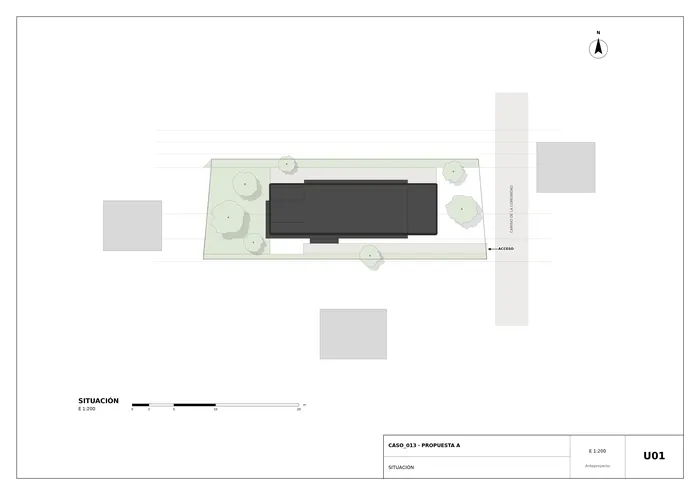
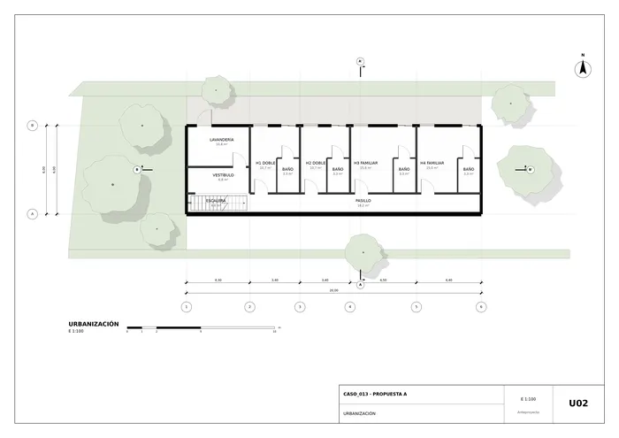
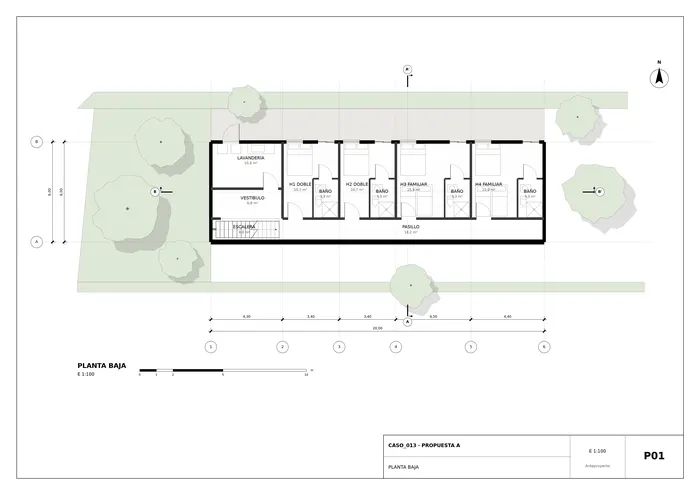
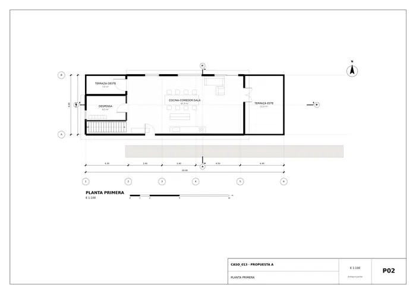
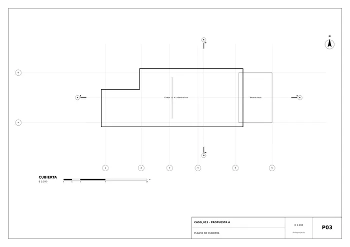
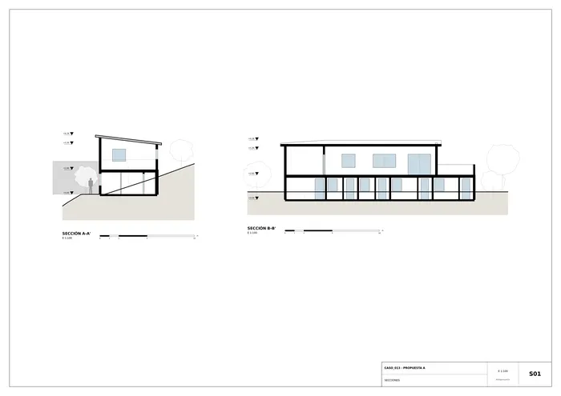
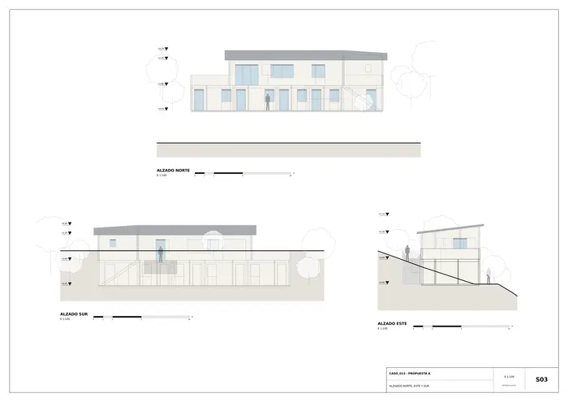
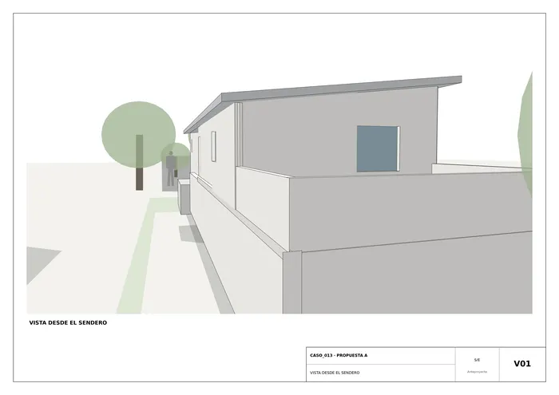
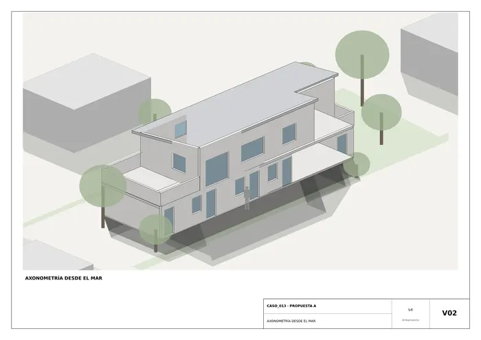
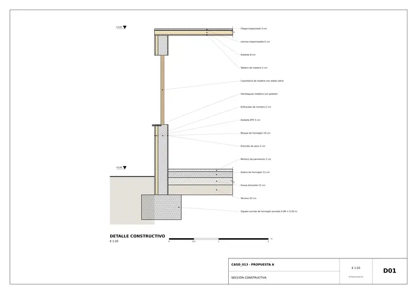

Caso 013 · Alejandro Soffia + Gabriel Rudolphy · 2014 · hospedaje (hostal)
Clima Csb: veranos frescos, brumas, invierno lluvioso, viento S-SW fuerte por la tarde. Supuesto (orientación no dada): el mar queda al norte, de modo que vista y sol coinciden (hemisferio sur) y el viento llega por la espalda del edificio, que queda enterrado al sur.
Consigna A: el boceto se lee como un volumen compacto único (polígono con una muesca) sobre la ladera, con el cono de vistas hacia el mar. Un único bloque de bloque de hormigón, de 20 x 6 m en planta baja y 16 x 6 m en planta alta (retranqueada, con la muesca del boceto en la esquina noroeste), escalonado en dos niveles. El nivel bajo se entierra al sur con el muro de contención como pared; el alto se entra a cota del sendero. El lado largo va paralelo a las curvas de nivel, como pide la parcela.
| Partido | 1: bloque único escalonado en 2 niveles | 2: dos pabellones separados (habitaciones / común) |
|---|---|---|
| Programa | Todo compacto; 12 camas + común | Igual, con más fachada y más muros |
| Clima | Superficie envolvente mínima; protegido del viento | Patio expuesto al viento S-SW |
| Vistas | Todas las habitaciones al norte | Habitaciones en cascada, buenas vistas |
| Acceso | Un único acceso desde el sendero | Dos recorridos, rampas largas |
| Coste/normativa | Menor (m² de fachada y cimentación) | Mayor; ocupación mayor |
Elegido el 1: menor coste, cumple el presupuesto, y es lectura literal del boceto. Esquemas de partido: no se dibujaron como PNG aparte (omisión; la comparación se resume aquí).
Envolventes. (a) Bloque de hormigón 19 cm + EPS 5 cm exterior + enfoscado: huecos 30 % norte, 8 % sur, 12 % este; masa que amortigua la oscilación diaria, impermeable a la bruma, mano de obra local. (b) Entramado ligero de madera y tabla: más hueco, menos inercia y mantenimiento alto por humedad. Se elige (a). Protección solar: alero de 0,5 m en cubierta (el sol de verano al norte, hemisferio sur, entra bajo en invierno por los ventanales). Ventilación cruzada: ventanas norte + ventanas altas al sur en el pasillo y puerta del pasillo; baños con conducto de extracción pasiva.
| Exigencia | Propuesto | Cumple |
|---|---|---|
| Situación | U01 | Sí |
| Plantas | P01, P02, P03 | Sí |
| Secciones | S01 (A y B) | Sí |
| Alzados | S03 (norte, sur, este) | Sí |
| Detalle constructivo | D01 1:20 | Sí |
| Urbanización/paisaje (agua, topografía) | U02 con terreno y vegetación; falta lámina de gestión de aguas dibujada | Parcial: el drenaje se describe en el punto 7, no se acota |
| Habitaciones con baño | 4 (2 dobles + 2 familiares), 12 plazas | Sí |
| Espacio común cocina-comedor-sala (1) | 1, ≈70 m² | Sí |
| Lavandería y servicio | Lavandería PB (≈11 m²) + despensa P1 | Sí |
| Terrazas con vista al mar | Terraza norte PB, terraza este y oeste P1 | Sí |
| Superficie 140-230 m² | ≈216 m² | Sí |
| Presupuesto 600-650 USD/m² | Sistema constructivo de bloque, chapa y carpintería sencilla | Sí (no evaluado con partidas) |
| Normativa (ocupación, altura, retranqueos) | Ocupación ≈ 120/402 = 30 %; 2 plantas; 3 m a linderos sur y norte | Sin valores numéricos; asumido |
| Sin edificación existente | Todo nuevo | Sí |
Muros portantes de bloque de hormigón 19-20 cm; muro de contención de hormigón armado 30 cm al sur; forjado de hormigón de 25 cm (luces ≤ 4,5 m entre muros portantes, canto L/18); cubierta de chapa trapezoidal sobre correas de madera de 6 m apoyadas en los muros norte y sur; zapatas corridas bajo muros (D01). Solera de 12 cm sobre grava drenante. Acabado: enfoscado pintado; carpinterías de madera/aluminio estándar; cubierta de chapa a un agua (12 %) hacia el sur, con canalón y recogida a un aljibe en el lado alto.
Masa térmica y aislamiento exterior; orientación norte (sol invernal y mar), barrera al viento S-SW con el volumen enterrado. Agua caliente solar sobre la cubierta; depuración in situ o fosa séptica al norte. Evacuación: dos salidas en P1 (entrada sur y terraza este), planta baja con la escalera y salida por las puertas-ventana al deck. Accesibilidad: el nivel de entrada (P1) es accesible desde el sendero pero las habitaciones están en PB solo por escalera: desviación, sin ascensor ni rampa; justificada por el coste, pero una habitación accesible quedaría pendiente.
Las láminas P02 y S01 dan avisos de ocupación baja (dibujos pequeños). Algunos muebles de la planta no se han verificado en detalle (revisión mediante una sola hoja de contactos).
Cubierta vierte al sur a canalón y aljibe; agua de la ladera captada por una cuneta de grava al sur del edificio, y conducida a ambos extremos de la parcela.

U01 · Situación
U02 · Urbanización
P01 · Planta baja
P02 · Planta primera
P03 · Planta de cubierta
S01 · Secciones
S03 · Alzados norte, este y sur
V01 · Vista desde el sendero
V02 · Axonometría desde el mar
D01 · Sección constructivaMemoria de la propuesta tal como la entregó el sistema. Se han omitido las notas internas del proceso (revisiones, control de reconocimiento y referencias a archivos de trabajo).